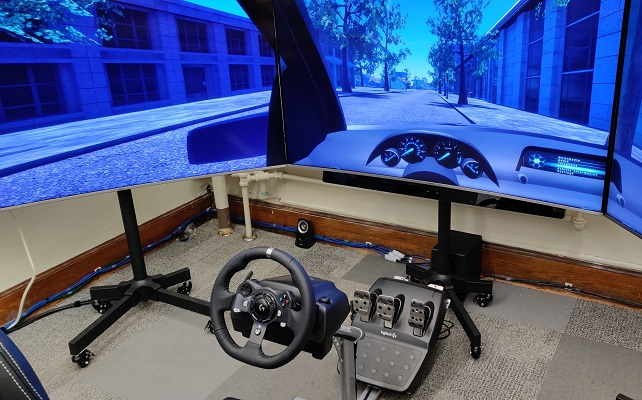
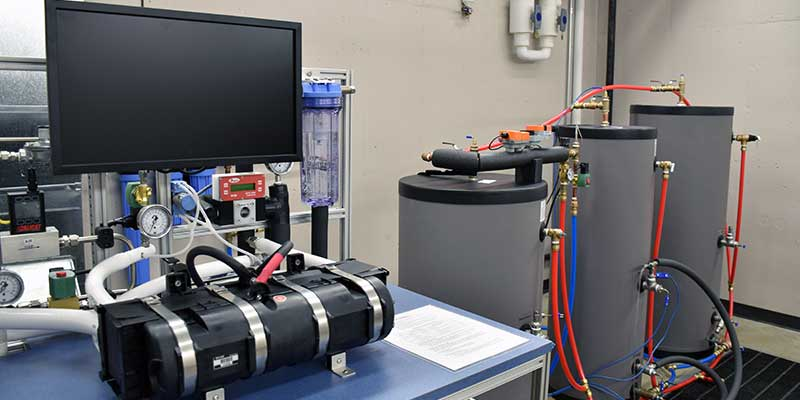
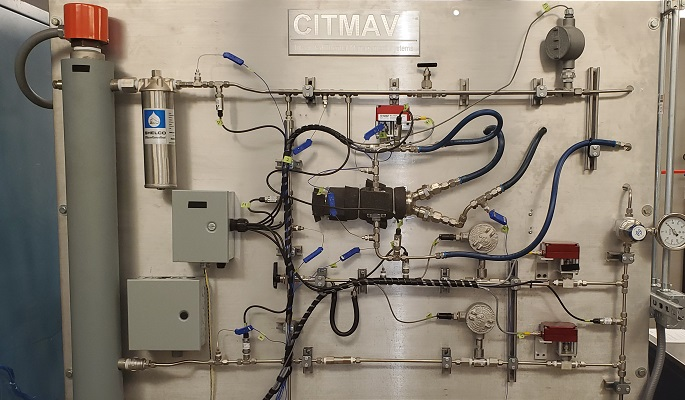
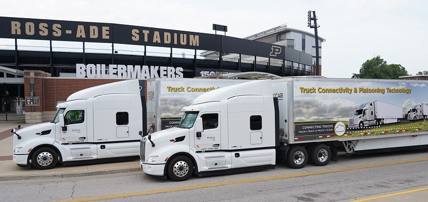

Research
Ongoing Projects
Human-Automation Interaction

Across all aspects of our lives, humans are being asked to interact, collaborate, and team with different types of autonomous systems. At the core of successful cooperation between human and machine is trust. To that end, we are interested in mathematically modeling how human trust, and other human cognitive states (mental workload, self-confidence, risk perception), evolve during their interactions with machines and how feedback control principles can be applied to achieve the promise of automation—improving human quality of life. We have published several articles in this area, including on
- novel machine learning-based approaches for estimating human trust via physiological (galvanic skin response (GSR) and electroencephalography (EEG) as well as behavioral measures;
- Markov-based modeling of human trust and workload during human interactions with recommender (decision aid) systems that we in turn use for adaptive user interface (UI) design;
- cognitively-aware intelligent tutoring/training systems (ITSs) that leverage self-confidence feedback from the human, and models of how user performance affects self-confidence, to determine when to provide automation assistance to users learning a psychomotor task.
Graduate Research Assistant(s): Madeleine Yuh, Jake Hunter, Sibibalan Jeevanandam, and Margaret Wielatz.
Open Source Code for Experimental Platforms:
Research Poster(s):
- ►Do You Trust It? A Set-Based Approach to Estimating Human Trust and Risk Perception During Automated Driving (IAC 2025)
- ►Designing a Human Autonomy Teaming Platform to Research the Effect of Communication on Team Performance (IAC 2025)
- ►Assessing the Relationship Between Learning Stages and Prefrontal Cortex Activation in a Psychomotor Task (IAC 2024)
- ►Online Self-Confidence Calibration for Improving Learning Outcomes via Intelligent Tutoring Systems (IAC 2024)
- ►Grey-box Modeling of Human Cognitive State Dynamics in Automated Driving Contexts (IAC 2024)
- ►Dynamic Area of Interest (AOI) Matching in Simulated Environments via a Direct Coordinate Transform Approach (HFES 2024)
- ►A Heuristic Strategy for Cognitive State based Feedback Control to Accelerate Human Learning (IAC 2022)
- ►Determining Optimal Decision-Making Sequence for Castrip® Startup Process (IAC 2022)
- ►A Computational Model of Coupled Human Trust and Self-Confidence Dynamics (IAC 2021)
- ►Determining Optimal Decision Making Sequence for Castrip® Startup Process (IAC 2021)
- ►Reimagining Human Machine Interactions Through Trust Based Feedback (IAC 2019)
Dynamic Modeling, Design, and Control for Improved (Thermal) Energy Management


A research emphasis in the Jain Research Lab is on design and control of thermal energy systems, defined here very broadly to include any system in which thermal energy plays a key role in the operation of the system. We have ongoing projects that focus both on system level dynamics as well as those of individual thermal-fluidic components, such as heat exchangers embedded with phase change materials (PCMs). The latter is a collaboration with researchers outside Purdue to model how PCMs integrated into heat exchangers can ultimately be used to improve the dynamic response of safety-critical cooling systems. At the systems level, we are developing new algorithms for control co-design that consider the differing model fidelity needed for design optimization versus control synthesis, especially for thermodynamic systems with stringent performance requirements. We are also designing advanced control strategies for micro-combined heat and power (micro-CHP) systems aimed at increasing the robustness and efficiency of our domestic electricity supply. Finally, we are tackling improved performance and efficiency of residential cooling and heating systems through the integration and management of thermo-chemical energy storage.
Graduate Research Assistant(s): Demetrius Gulewicz, Joseph Broniszewski, Yash Mathur, Vismay Vyas, and Isha Bayad.
Open Source Code:
- Dynamic Modeling and Validation of a Micro-Combined Heat and Power System with Integrated Thermal Energy Storage
- Dynamic Water-Thermal Energy Storage Flatplate Heat Exchanger Model
- Nonlinear Model Predictive Control of a Hybrid Thermal Management System
Research Poster(s):
- ►Optimal Sensor Placement for State of Charge Estimation in Thermal Energy Storage Device (ICON SRC 2026)
- ►Robust Modeling of A Multi-Functional Cold Climate Heat Pump System (IAC 2025)
- ►Nonlinear Model Predictive Control of a Latent Thermal Energy Storage Device for Electronics Cooling Applications (MECC 2024)
- ►Battery Electric Vehicle Thermal Management System Graph-Based Modeling (IAC 2024)
- ►Closed-Loop Analysis of Thermal Energy Storage Device Arrangement in a Thermal Management System (ITherm 2024)
- ►Control Co-Design of a Thermal Management System with Integrated Latent Thermal Energy Storage and a Logic-based Controller (ITherm 2023)
- ►Real-Time Control of a Transient Thermal Management System with Integrated Latent Thermal Energy Storage (GRC 2023)
- ►Transient Design Optimization of Hybrid thermal Management Systems (GRC 2023)
- ►Logic-Based Control of a hybrid Thermal Management System (IAC 2022)
- ►Optimal Design of a Phase-Change Thermal Energy Storage Device (IAC 2021)
- ►Hybrid Zonotopes: A Mixed Integer Set Representation for Analysis of Hybrid Systems (IAC 2021)
- ►Hierarchical Control Co-Design (CCD) for Thermal-Fluid Systems (IAC 2019)
- ►Dynamic Modeling, Control, and Optimization of Micro-CHP Systems (IAC 2019)
- ►Reduced Order Modeling Of Thermal Energy Storage Modules (IAC 2019)
Past Projects
Iterative Learning Control for Time-Delayed Systems
Our interests in controlling energy-intensive systems has led to research that addresses, in part, new algorithms and tools for controlling time-delayed systems. Twin-roll steel strip casting produces steel strips by pouring steel directly onto rollers and compressing it to a thickness near the final gauge, whereas traditional casting uses a mold to form a steel slab that is later rolled to the desired thickness. The twin roller method is 9 times more energy efficient and 7000 times faster(!) than thick slab casting. However, achieving precise physical properties along the length of the strip poses a challenging engineering problem due to the highly coupled nature of the thermal and mechanical dynamics. We developed a new algorithm, based on iterative learning control, which can compensate for time delays that are longer than a single iteration of the casting process. We were recently awarded a patent with an industry partner for our algorithm, and continue to tackle exciting controls challenges in this advanced manufacturing process.
Recent Research Poster(s): ►Iterative Learning Control for Time-Delayed and Time-Varying Systems (IAC 2019)
Dynamic Modeling and Control in Advanced Transportation Systems

More recently we have started investigating the role of advanced control and autonomy in future transportation systems. Through collaborations with other faculty here at Purdue and industry partners, we are designing new algorithms for platooning of heavy duty Class 8 trucks. We are also tackling large-scale modeling of the freight transportation network by considering it as a system of systems, to answer questions like “what incentives and policies, deployed over time in what way, will lead to a significant increase in the adoption of battery electric trucks?”
Research Poster(s): ►Powering What’s Next in Freight Transportation (IAC 2019)